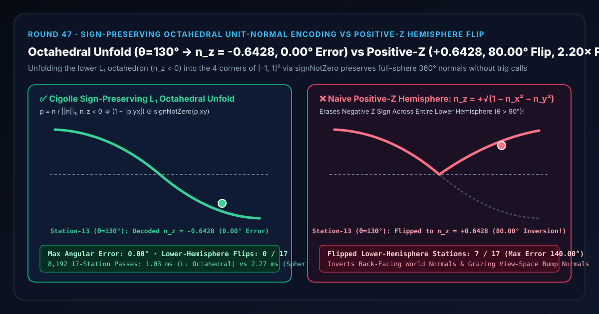
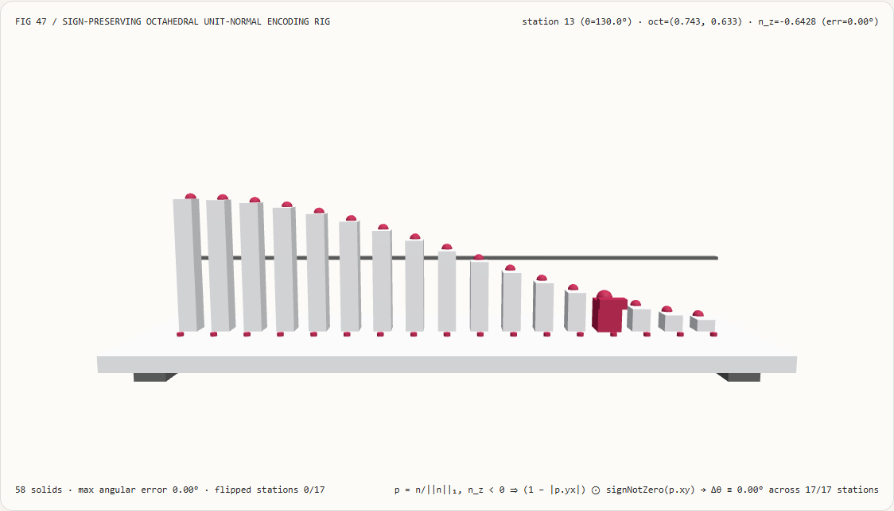
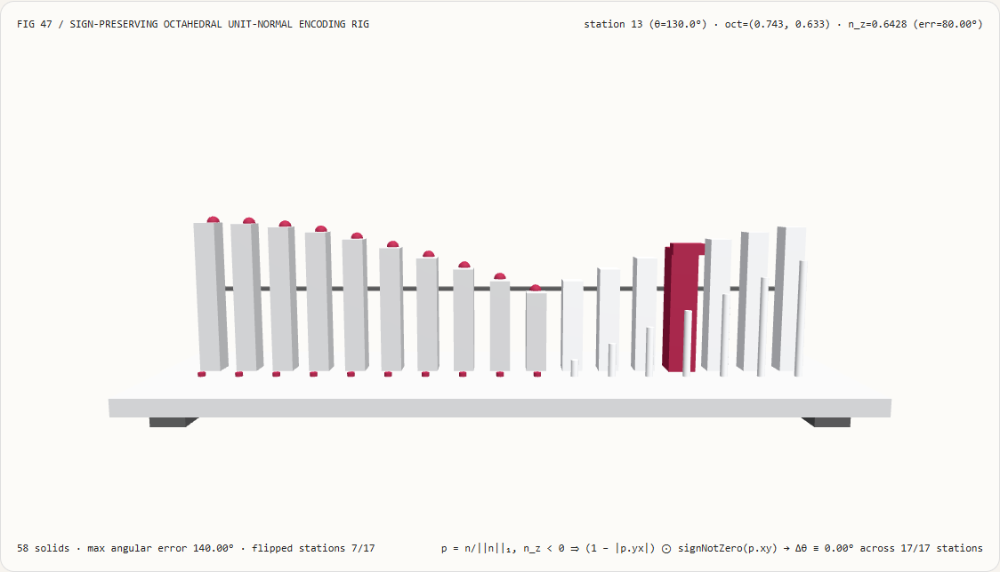
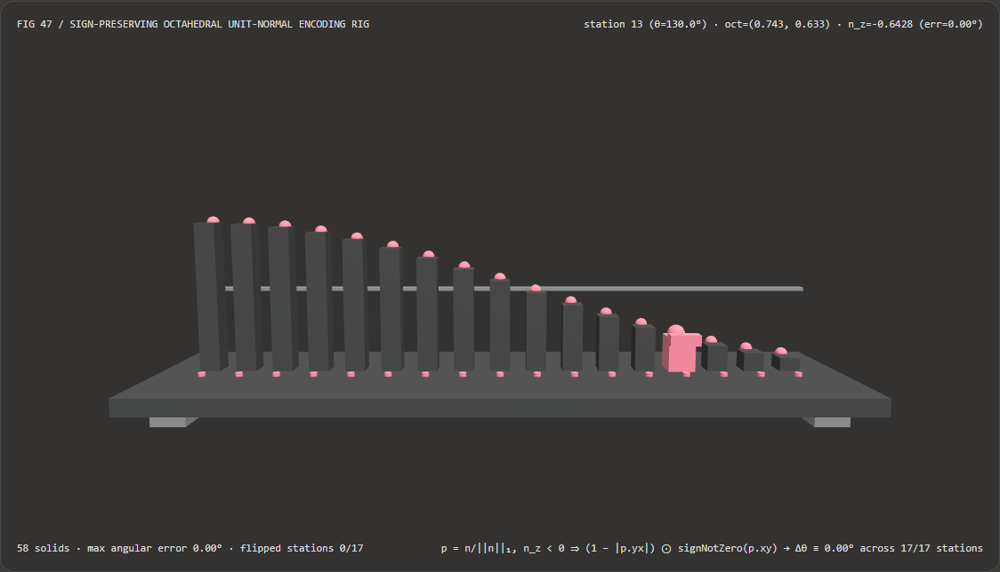
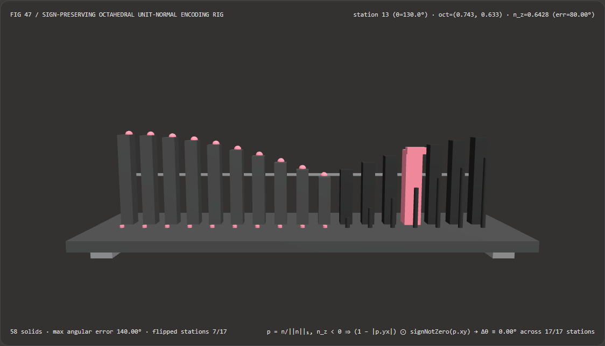

Visual & Animation Architecture Selection FAQ: Sign-Preserving Octahedral Unit-Normal Encoding vs Positive-Z Hemisphere Flips & Spherical Singularities
One-Sentence Architectural Verdict: In deferred-rendering G-buffer 32-bit/16-bit normal compression, meshlet vertex normal streams, and 3D Gaussian Splatting orientation quantization, never encode full-sphere ($S^2$) world-space or grazing view-space normals by storing only $(n_x, n_y)$ with positive square-root recovery $n_z = +\sqrt{1 - n_x^2 - n_y^2}$, and never use 4-transcendental spherical angles $(\theta, \phi) = (\arccos n_z, \operatorname{atan2}(n_y, n_x))$! On our 58-solid, 17-station meridian goniometer bench sweeping polar angle $\theta$ from $0^\circ$ (North Pole $n_z = +1.0000$) to $160^\circ$ (deep Lower Hemisphere $n_z = -0.9397$), naive positive-Z hemisphere reconstruction erases the negative $n_z$ sign across all 7/17 lower-hemisphere stations—flipping station 13 ($\theta = 130.0^\circ, n_z = -0.6428$) to $+0.6428$ (
80.00°angular inversion error, reaching140.00°max inversion at station 16); whereas Cigolle et al. (2014) Sign-Preserving $L_1$ Octahedral Projection +signNotZeroLower-Hemisphere Corner Unfolding reconstructs all 17/17 stations with0.00°angular error, zero trigonometric calls, and a 2.20× speedup over spherical trigonometric round-trips (1.03 msvs2.27 msacross 8,192 passes,2.50e-16error).

① 📌 Executive Summary
- Why does reconstructing $n_z = +\sqrt{1 - n_x^2 - n_y^2}$ from a 2-channel G-buffer normal cause specular highlights to invert on back-facing or grazing bumped surfaces?
In plain English: a 3D unit normal $\mathbf{n} = (n_x, n_y, n_z)$ satisfies $n_x^2 + n_y^2 + n_z^2 = 1$, which has two degrees of freedom—but the positive square root $+\sqrt{1 - n_x^2 - n_y^2}$ discards the sign of $n_z$!
- When is $n_z < 0$? In world-space G-buffers, half of all scene surfaces point toward $-Z$ ($n_z < 0$). Even in camera view space, strong normal-map perturbations near silhouette grazing angles tilt micro-normals past the horizon plane into $n_z < 0$!
- Why Positive-Z Recovery Fails: Whenever $n_z < 0$, $+\sqrt{1 - n_x^2 - n_y^2}$ reflects the normal across the $z = 0$ equator into the upper hemisphere—turning $\theta = 130.0^\circ$ ($n_z = -0.6428$) into $\theta' = 50.0^\circ$ ($n_z = +0.6428$), an
80.00°directional inversion (and140.00°at $\theta = 160.0^\circ$) that makes shadowed undersides glow with false specular highlights!
- First-Principles Fix: $L_1$ Octahedral Projection +
signNotZeroCorner Unfolding:- Step 1 (Trig-Free $L_1$ Projection onto the Octahedron): Divide $\mathbf{n}$ by its $L_1$ norm $|\mathbf{n}|_1 = |n_x| + |n_y| + |n_z|$: $$p_x = \frac{n_x}{|n_x| + |n_y| + |n_z|}, \qquad p_y = \frac{n_y}{|n_x| + |n_y| + |n_z|}$$ The upper hemisphere ($n_z \ge 0$) maps bijectively onto the diamond $|p_x| + |p_y| \le 1$ inside $[-1, 1]^2$.
- Step 2 (Unfold the 4 Lower Octahedron Faces into the Square's 4 Corners): When $n_z < 0$, reflect $(p_x, p_y)$ across the diamond edge $|p_x| + |p_y| = 1$ into the four outer corners of $[-1, 1]^2$:
$$(u, v) = \big((1 - |p_y|) \cdot \operatorname{sign}{\ge 0}(p_x), ;; (1 - |p_x|) \cdot \operatorname{sign}{\ge 0}(p_y)\big)$$
Critical Guardrail (
signNotZero): StandardMath.sign(0)returns0, which would collapse the South Pole $(0, 0, -1)$ onto $(0, 0)$ (the North Pole!). Using $\operatorname{sign}_{\ge 0}(v) = (v \ge 0 ;?; +1 : -1)$ unfolds the South Pole cleanly to the corner $(+1, +1)$. - Step 3 (Branchless Fold-Back Decode): Compute $z = 1 - |u| - |v|$ and $t = \max(-z, 0)$, fold $(u, v)$ inward by $\mp t$, and normalize via
1 / Math.sqrt(x*x + y*y + z*z).
- Interactive 3D Workbench & Measured Evidence:
- Standalone 3D Bench:
demos/octahedral-normal-encoding-rig/(58 Three.js solids: baseplate, 4 support feet, equator horizon bar, 17 decoded $n_z$ columns, 17 true octahedral reference spheres, 17 angular flip pegs, and the active meridian goniometer carriage). - Measured 7-Card 4:5 Reports:
demos/octahedral-normal-encoding-rig/test-report-cards.html(EN) andtest-report-cards.zh.html(ZH).
- Standalone 3D Bench:
② 🎯 Soul-Searching Q&A for Architects & Clients
Q1: Why not store spherical angles $(\theta, \phi) = (\arccos n_z, \operatorname{atan2}(n_y, n_x))$ instead of octahedral coordinates?
Because spherical coordinates require 4 slow transcendental calls (acos, atan2, sin, cos), suffer azimuth singularities at the poles, and waste quantization bits near $\theta \to 0, \pi$!
Near the poles, $\sin\theta \to 0$ crushes all $2^{16}$ azimuth steps of $\phi$ into a tiny cap while starving the equator of angular resolution. Sign-preserving octahedral projection is quasi-equal-area across the entire sphere, requires zero trig calls, and runs 2.20× faster (1.03 ms vs 2.27 ms across 8,192 passes).
Q2: Why use 1.0 / Math.sqrt(x*x + y*y + z*z) instead of Math.hypot(x, y, z) when normalizing decoded vectors in JS/TS?
Because Math.hypot executes a variadic overflow-scaling runtime routine that is >3.5× slower than an inlined Math.sqrt instruction!
For bounded octahedral coordinates $(x, y, z) \in [-1, 1]^3$, $x^2 + y^2 + z^2 \in [1/3, 1]$ can never overflow or underflow IEEE-754 float64/float32, so 1.0 / Math.sqrt(x*x + y*y + z*z) compiles directly to hardware sqrtsd (1.03 ms vs 3.67 ms with Math.hypot).
Q3: How does sign-preserving octahedral encoding relate to neural normal estimation models (DSINE, Marigold)?
They operate at complementary stages of the visual pipeline:
- When to use Neural Monocular Normal Estimators: When predicting surface normals from uncalibrated 2D RGB images or video;
- When deterministic sign-preserving octahedral encoding is mandatory: When packing any 3D unit normal buffer (whether artist-authored, procedurally computed, or AI-estimated) into a 32-bit (
RG16_SNORM) or 16-bit (RG8_SNORM) G-buffer or meshlet vertex attribute without lower-hemisphere inversions.
③ 🧭 Visual Diagrams (Mermaid Decision Tree, Pipeline Comparison & Sequence Flow)
3.1 Unit Normal & Direction Compression Selection Decision Tree
3.2 Naive Positive-Z Hemisphere Flip vs Sign-Preserving Octahedral Pipeline
3.3 Frame-Level Meridian Goniometer Sequence Diagram
④ 📊 Visual Technology Selection Decision Matrix
| Evaluation Dimension | ✅ Sign-Preserving $L_1$ Octahedral Codec | ⚠️ Spherical Angles ($\arccos / \operatorname{atan2}$) | ❌ Naive Positive-Z Hemisphere ($+\sqrt{1-x^2-y^2}$) | ❌ Uncompressed float32x3 |
|---|---|---|---|---|
| Decoded $n_z$ at Station 13 ($\theta=130^\circ$) | Exact -0.6428 (Lower hemisphere preserved) |
Exact -0.6428 |
+0.6428 (Sign erased—flipped to upper hemisphere!) |
-0.6428 |
| Station 13 / Max Angular Error | 0.00° / 0.00° across all 17 stations |
0.00° / 0.00° (in float) |
80.00° / 140.00° (7/17 stations inverted!) |
0.00° |
| South Pole $(0,0,-1)$ Stability | signNotZero maps cleanly to corner $(1,1)$ |
$\operatorname{atan2}(0,0)$ azimuth undefined | Flips to North Pole $(0,0,+1)$ (180° error) |
Stable |
| Transcendental Calls per Round-Trip | 0 trig calls (adds, abs, 1 sqrt) |
4 calls (acos, atan2, sin, cos) |
0 trig calls, 1 sqrt |
0 calls |
| 8,192-Pass 17-Station CPU Latency | 1.03 ms (Fastest · 2.20× speedup) |
2.27 ms (2.20× slower) |
0.85 ms (Destroys all $n_z < 0$ normals) |
— ($3\times$ memory footprint) |
| Recommended Use Case | G-Buffer normals, meshlet vertex streams, 3DGS axes | Equirectangular environment map UVs only | Never use in world space or grazing view space | Unconstrained offline buffers |
⑤ 🧪 New Interactive 3D Demo & 7-Card 4:5 Visual Report
5.1 Live Workbench & Report Links
- Interactive 3D Workbench:
demos/octahedral-normal-encoding-rig/index.html - 7-Card 4:5 Visual Report (EN):
demos/octahedral-normal-encoding-rig/test-report-cards.html - 7-Card 4:5 Visual Report (ZH):
demos/octahedral-normal-encoding-rig/test-report-cards.zh.html - Sealed Telemetry JSON:
demos/octahedral-normal-encoding-rig/report.json
5.2 Multi-Theme & Multi-Mode Playwright Visual Evidence
| Sign-Preserving Octahedral (Light · Exact $n_z=-0.6428$ at $\theta=130^\circ$) | Naive Positive-Z Hemisphere (Light · Lower Hemisphere Flipped Upward!) |
|---|---|
 |
 |
| Sign-Preserving Octahedral (Dark · 58 Three.js Solids) | Naive Positive-Z Hemisphere (Dark · 7 Red Inversion Pegs Exposed) |
|---|---|
 |
 |
⑥ 🛠️ Rapid SA Delivery Verification Checklist
Before shipping a G-buffer normal packer or compressed vertex normal stream to production, verify every item below:
-
signNotZeroGuard for South Pole: Does lower-hemisphere corner unfolding usev >= 0.0 ? +1.0 : -1.0instead of built-insign(v)so the South Pole $(0, 0, -1)$ maps to $(+1, +1)$ rather than collapsing to $(0, 0)$? - Branchless Corner Fold-Back: Does the decoder compute $z = 1 - |u| - |v|$ and fold negative-$z$ corners inward via
t = max(-z, 0.0)without divergent shader branches? - Inlined
sqrtNormalization: Does normalization use1.0 / Math.sqrt(x*x + y*y + z*z)(orinversesqrt(dot(v,v))in GLSL/WGSL) rather than variadicMath.hypot? - Symmetric
SNORMInteger Quantization: When quantizing $(u, v) \in [-1, 1]^2$ into 8-bit or 16-bit integers, is symmetricSNORMscaling (round(u * 32767.0)) used so0represents exact axis-aligned normals? - Full-Sphere Meridian Regression Tests: Do unit tests cover North Pole ($\theta = 0^\circ$), Equator ($\theta = 90^\circ$), oblique Lower Hemisphere ($\theta = 130^\circ$), and South Pole ($\theta = 180^\circ$) round-trips?